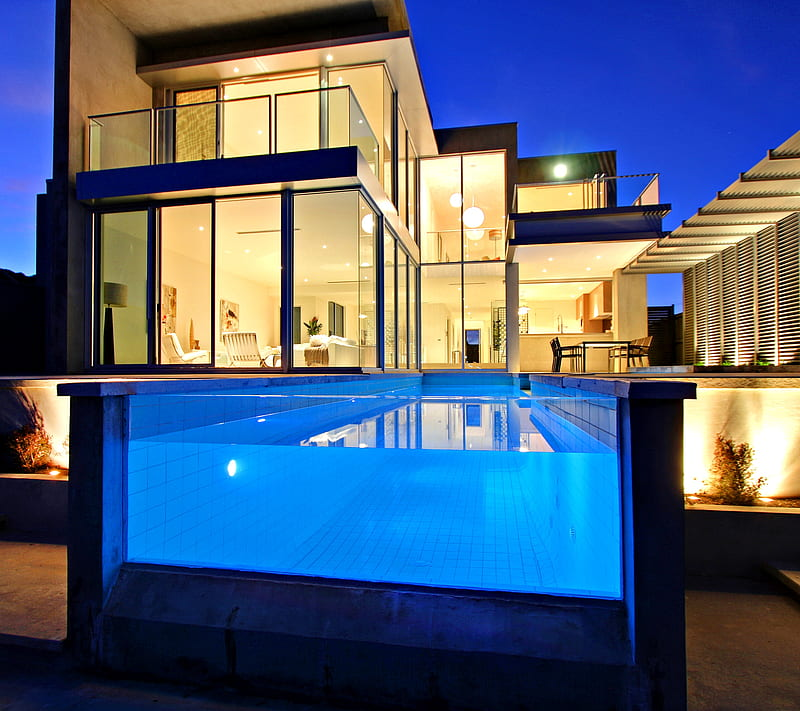
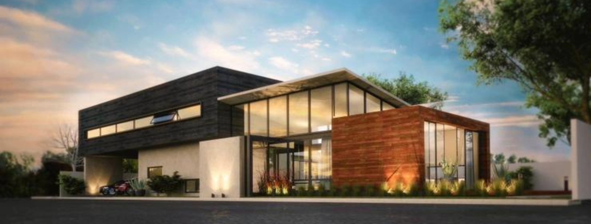

Fenix S.R.L. nace de la trayectoria de mas de veinte años de experiencia, acompañada de un equipo directivo, técnico y humano que le aporta a su trabajo la calidad y el servicio para estar a la altura de nuestros clientes.
Siguiendo los criterios y protocolos de buena conducta en materia de construcción, nos hemos rodeado de todo lo necesario para lograr la buena ejecución de cualquier tipo de obra, ejemplo de ello es nuestro equipo humano propio, compuesto por equipo técnico, arquitectos, encargados, oficiales en albañilería y fontanería, peones especialistas y logística, todos ellos con mas de veinte años de experiencia, tanto en el sector, como en esta empresa, así como nuestros equipos móviles, maquinaria y materiales, siempre de última generación.
Nuestra empresa formada por técnicos de la construcción y arquitectos
realizan un servicio integral al cliente, dando soluciones y resolviendo cualquier problema en el sector de la construcción.


Mision:
Solucionar los retos más complejos de infraestructura a través de propuestas rentables e innovadoras creando valor para nuestros clientes, nuestra gente y nuestro país.
Vision:Consolidar a Fenix S.R.L. como la mejor Constructora y Operadora de Infraestructura a través de la ejecución de sus proyectos y eficiencia
Valores: INNOVACIÓN
Buscamos nuevas y mejores formas de hacer nuestro trabajo. Vamos siempre un paso adelante.
EFICIENCIA
Nos enfocamos en hacer las cosas bien, aprovechando al máximo los recursos. No desperdiciamos el tiempo, nuestro talento ni los recursos.
HONESTIDAD
Somos éticos, justos y respetuosos. Nos conducimos con la verdad. Cumplimos con nuestros compromisos.
RESPONSABILIDAD
Estamos comprometidos con nuestras acciones y asumimos las consecuencias de las mismas. Nos hacemos cargo de nuestras decisiones.
RESPETO>
Valoramos a las personas, clientes y proveedores. Cumplimos los lineamientos y disposiciones establecidas.